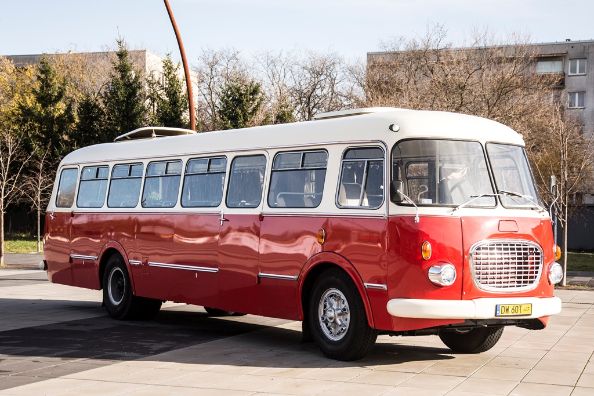

Polskie Autobusy Retro
Menu
•SAN
•JELCZ
•AUTOSAN
JELCZ

Jelcz – polskie przedsiębiorstwo motoryzacyjne z siedzibą w Jelczu-Laskowicach w powiecie oławskim w województwie dolnośląskim oraz marka samochodów ciężarowych i autobusów. Od lat 50. do 2001 roku samochody ciężarowe i autobusy pod marką Jelcz były produkowane przez Jelczańskie Zakłady Samochodowe Jelcz S.A., a następnie przez spółki zależne.
Strona stworzona przez Mikołaj Kozak 3F